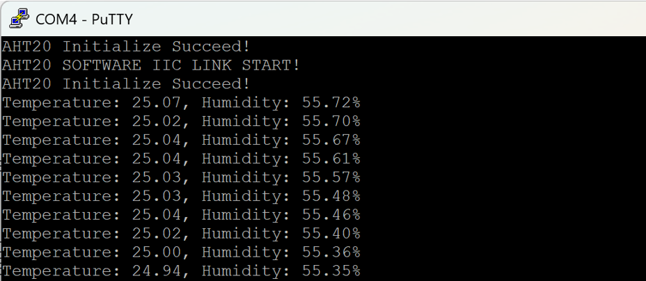

Hardware Connections & Pin Mapping
| 外设模块 | 引脚功能 | STM32 管脚 | 引脚工作模式描述 |
|---|---|---|---|
| I2C 传感器总线 | SCL / SDA | PB6 / PB7 | 软件模拟 I²C 开漏输出，适配 AHT20 & BMP280 |
| TFT-LCD 屏幕 | CLK / MOSI / CS / RS | PA5 / PA7 / PA4 / PA8 | 软件 SPI 屏幕驱动（PA3-RST复位，PB1-BL背光控制） |
| XPT2046 触屏 | TCS / DIN / DO / CLK / IRQ | PB4 / PB3 / PA1 / PA8 / PA0 | 位带加速 SPI 触屏控制（PB3/PB4 解除 JTAG 调试占用） |
| 报警指示 LED | PC13 (闪烁) / PA0 (PWM) | PC13 / PA0 / PA1 / PA2 | TIM2_CH1 PWM 呼吸灯 (PA0) | 学习 (PA1) | 监测 (PA2) |
| 用户按键 | KEY1 (翻页) / KEY2 (重置) | PB0 / PB8 | GPIO 上拉输入模式，按键中断扫描 |
